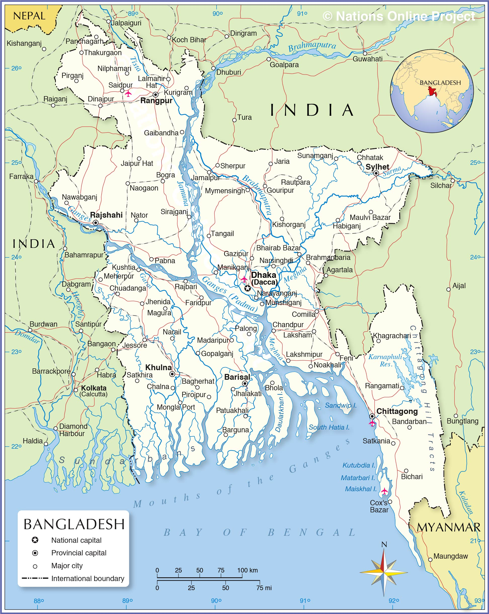

Geography
Bordered on three sides by India and sharing a border with Burma, Bangladesh is located in South Asia on the northern edge of the Bay of Bengal. About 140 million people inhabit the country, which is 55,598 square miles.
Most of the country is situated on deltas of large rivers flowing from the Himalayas: the Ganges unites with the Jamuna (main channel of the Brahmaputra) and later joins the Meghna to eventually empty into the Bay of Bengal.
During the monsoon season in a normal year, about 30% of the country is under water. Some years, however, floods cover 70% of the country. At some times during the year, up to 70% of the country is under water. Annual flooding is a way of life but often the flooding is not due to rainfall but caused by water coming from across the borders via the Ganges, Meghna, and the Brahmaputra Rivers.

Characteristics
Bangladesh consists primarily of low-lying deltaic plains. The Ganges and Brahmaputra Rivers (known as the Padma and Jamuna in Bangladesh) and countless smaller tributaries criss-cross the country. The capital, Dhaka, is fewer than 25 feet above sea level. During the monsoon season from June to October, between 30% and 70% of the country is under water due to flooding of rivers. Heavy rainfall is characteristic of Bangladesh, with most parts of the country receiving about 200 centimeters (80 inches) of rainfall per year. Annual cyclones can cause extreme flooding and have led to great losses of life and property damage.
Living In Bangladesh
I was born on September 27th, 2002 in Chittagong, Bangladesh. I lived in Bangladesh for 7 years until I immigrated to America. My childhood in Bangaldesh was full of adventures. I was alwasy outside with friends playing Kabaddi. Kabaddi is the national sport of Bangladesh. When I am not playing I was either breaking into my neighbor's garden to steal fresh Amla. Bangladesh is known for its flooding and when it rained our houses used to be brimmed under watter with fishes from the nearby rivers. We used to make small boats and try to catch fish.
{kind=link}
{kind=link}
{kind=link}